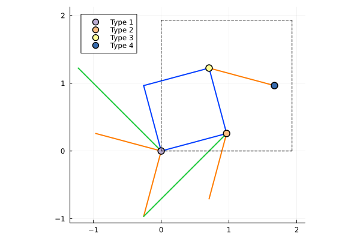
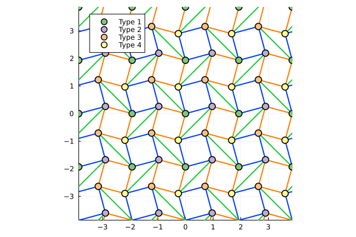

Shastry-Sutherland Lattice
This example computes the linked cluster expansion on a Shastry-Sutherland lattice up to order 3.
Setup
Define the unit cell of the Shastry-Sutherland lattice:
using Lincege
shsu_basis = [[0.0, 0.0], [(sqrt(3) + 1) / (2 * sqrt(2)), (sqrt(3) - 1) / (2 * sqrt(2))], [sqrt(2) / 2, sqrt(6) / 2], [(sqrt(3) + 3) / (2 * sqrt(2)), (sqrt(3) + 1) / (2 * sqrt(2))]]
shsu_pvecs = [[(sqrt(3) + 1) / sqrt(2), 0.0], [0.0, (sqrt(3) + 1) / sqrt(2)]]
shsu_bonds = [Bond(1, 2, [0, 0], 1), Bond(2, 3, [0, 0], 1), Bond(1, 4, [-1, 0], 1), Bond(3, 4, [-1, 0], 1),
Bond(3, 4, [0, 0], 2), Bond(2, 3, [0, -1], 2), Bond(1, 2, [-1, 0], 2), Bond(1, 4, [-1, -1], 2),
Bond(2, 4, [-1, -1], 3), Bond(1, 3, [-1, 0], 3)]
shsu_uc = UnitCell(shsu_basis, shsu_pvecs, shsu_bonds, [1, 2, 3, 4])UnitCell([0.0 0.9659258262890682 0.7071067811865476 1.6730326074756154; 0.0 0.2588190451025207 1.224744871391589 0.9659258262890682], [1.9318516525781364 0.0; 0.0 1.9318516525781364], [1, 2, 3, 4], Bond[Bond(1, 2, [0, 0], 1), Bond(2, 3, [0, 0], 1), Bond(1, 4, [-1, 0], 1), Bond(3, 4, [-1, 0], 1), Bond(3, 4, [0, 0], 2), Bond(2, 3, [0, -1], 2), Bond(1, 2, [-1, 0], 2), Bond(1, 4, [-1, -1], 2), Bond(2, 4, [-1, -1], 3), Bond(1, 3, [-1, 0], 3)])The four-site basis uses three bond types to distinguish the interaction families. Nonzero bond offsets connect to neighboring cells. The four distinct site colors keep the basis sites distinguishable when comparing clusters.
Imaging the unit cell and lattice
Load Plots and ColorSchemes to activate Lincege's plotting capabilities.
using Plots, ColorSchemes
image_unit_cell(shsu_uc)
image_lattice(shsu_uc)
Building the lattice and clusters
The following code generates clusters up to order 3, starting with translational clusters and reducing to isomorphic clusters.
m_order = 3
lattice = SiteExpansionLattice(m_order, shsu_uc)
trans_clusters = TranslationClusterSet(lattice)
clusters_from_lattice!(trans_clusters, lattice)
iso_clusters = IsomorphicClusterSet(lattice)
reduce_clusters!(iso_clusters, trans_clusters)ClusterSet{IsomorphicHasher} with 45 clustersComputing the expansion
The final NLCE expansion weights are computed recursively.
expansion = Expansion(iso_clusters, lattice)
summation!(expansion, m_order)Expansion(Dict{UInt64, Lincege.ExpansionCluster}(0x4cf9b8b149086392 => Lincege.ExpansionCluster(Vertices: [25, 74, 171], 0.25, UInt64[0xb32c6a32da472d68, 0x0ef7ab2229d359da, 0xaebea88de1e201b3, 0xb2bb1db8bed3ee8d, 0x551795fc14220712], Dict{UInt64, Float64}(0x4cf9b8b149086392 => 1.0, 0xaebea88de1e201b3 => -1.0, 0x0ef7ab2229d359da => 1.0, 0x551795fc14220712 => 0.0, 0xb32c6a32da472d68 => -1.0, 0xb2bb1db8bed3ee8d => 0.0)), 0xe38f5421c4351589 => Lincege.ExpansionCluster(Vertices: [25, 73, 171], 0.25, UInt64[0xb2bb1db8bed3ee8d, 0x0ef7ab2229d359da, 0xaebea88de1e201b3, 0x9a60d02ff35045a6, 0x551795fc14220712], Dict{UInt64, Float64}(0xaebea88de1e201b3 => -1.0, 0xe38f5421c4351589 => 1.0, 0x9a60d02ff35045a6 => -1.0, 0x0ef7ab2229d359da => 1.0, 0x551795fc14220712 => 0.0, 0xb2bb1db8bed3ee8d => 0.0)), 0xcae659c9bec0129f => Lincege.ExpansionCluster(Vertices: [74, 123], 0.25, UInt64[0xb2bb1db8bed3ee8d, 0xc56b56a580702f79], Dict{UInt64, Float64}(0xc56b56a580702f79 => -1.0, 0xcae659c9bec0129f => 1.0, 0xb2bb1db8bed3ee8d => -1.0)), 0xec90e04bda1b5f46 => Lincege.ExpansionCluster(Vertices: [122, 123, 171], 0.25, UInt64[0xbdb0a6d80c060331, 0x3188f80229d0b394, 0xc56b56a580702f79, 0xc56b56a580702f79, 0x551795fc14220712], Dict{UInt64, Float64}(0xc56b56a580702f79 => 0.0, 0x3188f80229d0b394 => -1.0, 0xbdb0a6d80c060331 => -1.0, 0xec90e04bda1b5f46 => 1.0, 0x551795fc14220712 => 1.0)), 0x5359bbbca857d4e3 => Lincege.ExpansionCluster(Vertices: [74, 116, 164], 0.25, UInt64[0x8f5ef7db4ea63131, 0xc56b56a580702f79, 0x3188f80229d0b394, 0xb2bb1db8bed3ee8d, 0x551795fc14220712, 0xf8fa8311e45f6b42], Dict{UInt64, Float64}(0xc56b56a580702f79 => 1.0, 0x3188f80229d0b394 => -1.0, 0xf8fa8311e45f6b42 => -1.0, 0x5359bbbca857d4e3 => 1.0, 0x551795fc14220712 => 1.0, 0x8f5ef7db4ea63131 => -1.0, 0xb2bb1db8bed3ee8d => 1.0)), 0xf7645a28b99cc697 => Lincege.ExpansionCluster(Vertices: [74, 115, 164], 0.25, UInt64[0x8f5ef7db4ea63131, 0xb2bb1db8bed3ee8d, 0xc56b56a580702f79, 0x551795fc14220712, 0xbdb0a6d80c060331], Dict{UInt64, Float64}(0xc56b56a580702f79 => 0.0, 0xbdb0a6d80c060331 => -1.0, 0xf7645a28b99cc697 => 1.0, 0x551795fc14220712 => 1.0, 0x8f5ef7db4ea63131 => -1.0, 0xb2bb1db8bed3ee8d => 0.0)), 0xc8af7a8540b639e5 => Lincege.ExpansionCluster(Vertices: [25, 73, 163], 0.25, UInt64[0xb2bb1db8bed3ee8d, 0x8f5ef7db4ea63131, 0x0ef7ab2229d359da, 0x9a60d02ff35045a6, 0x551795fc14220712], Dict{UInt64, Float64}(0x9a60d02ff35045a6 => -1.0, 0x0ef7ab2229d359da => 0.0, 0xc8af7a8540b639e5 => 1.0, 0x551795fc14220712 => 0.0, 0x8f5ef7db4ea63131 => -1.0, 0xb2bb1db8bed3ee8d => 1.0)), 0xc56b56a580702f79 => Lincege.ExpansionCluster(Vertices: [123], 0.25, UInt64[], Dict{UInt64, Float64}(0xc56b56a580702f79 => 1.0)), 0x5d2061cc7c6059b5 => Lincege.ExpansionCluster(Vertices: [25, 81, 171], 0.25, UInt64[0x0ef7ab2229d359da, 0xaebea88de1e201b3, 0x8f5ef7db4ea63131, 0xb2bb1db8bed3ee8d, 0x551795fc14220712], Dict{UInt64, Float64}(0x5d2061cc7c6059b5 => 1.0, 0xaebea88de1e201b3 => -1.0, 0x0ef7ab2229d359da => 0.0, 0x551795fc14220712 => 1.0, 0x8f5ef7db4ea63131 => -1.0, 0xb2bb1db8bed3ee8d => 0.0)), 0x311bb6af605532bb => Lincege.ExpansionCluster(Vertices: [25, 73, 74], 0.25, UInt64[0xb2bb1db8bed3ee8d, 0xb32c6a32da472d68, 0x0ef7ab2229d359da, 0x9a60d02ff35045a6, 0xb2bb1db8bed3ee8d], Dict{UInt64, Float64}(0x9a60d02ff35045a6 => -1.0, 0x311bb6af605532bb => 1.0, 0x0ef7ab2229d359da => 1.0, 0xb2bb1db8bed3ee8d => 0.0, 0xb32c6a32da472d68 => -1.0))…), Vector{UInt64}[[0xc56b56a580702f79, 0x0ef7ab2229d359da, 0xb2bb1db8bed3ee8d, 0x551795fc14220712], [0xcae659c9bec0129f, 0xbdb0a6d80c060331, 0x9a60d02ff35045a6, 0x8f5ef7db4ea63131, 0xb32c6a32da472d68, 0xaebea88de1e201b3, 0x11467252275d7b47, 0x1ea809b48ba89192, 0xf8fa8311e45f6b42, 0x3188f80229d0b394], [0x4cf9b8b149086392, 0xe38f5421c4351589, 0xec90e04bda1b5f46, 0x5359bbbca857d4e3, 0x311bb6af605532bb, 0xed640007bcd4324a, 0xdf679ba8465e7c42, 0xbf7fd1ac49ba991d, 0xb4c7275680180852, 0x87c90d252ffb7940 … 0xa39af650d859fbf1, 0x7558271bc23098dd, 0xa052c67c3e518353, 0x5e1a0bfbae61d395, 0x03825cdbe378eb4b, 0x69029f07a019613d, 0x0cda31682af2d7e4, 0x73ad4df8867d178c, 0x5a710df71921662c, 0x3b3f68e05180dc03]], 0)Writing to JSON
Lastly, write the results to a JSON file for future computations.
write_to_json(expansion, lattice, "shastry-sutherland_lattice.json")